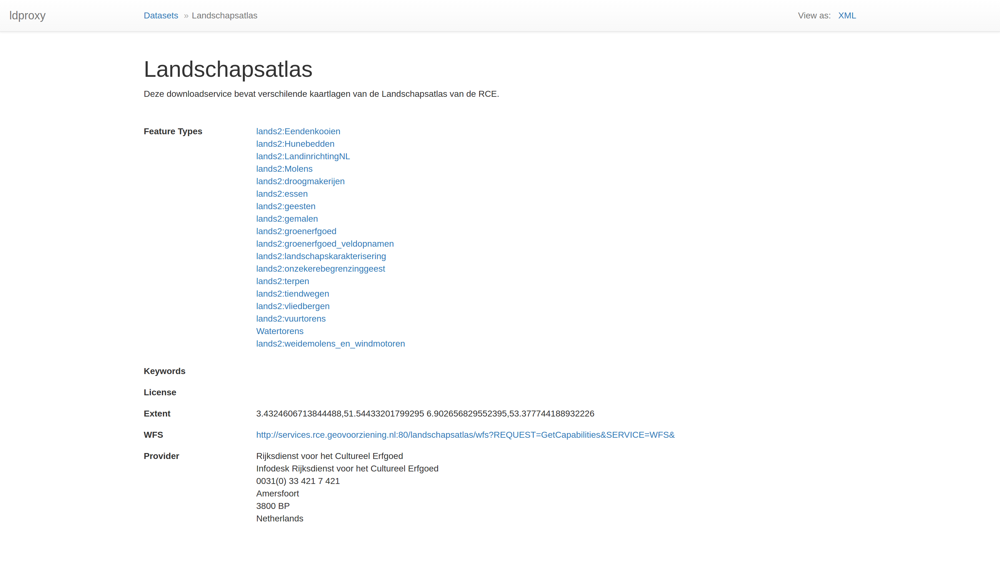

Adding a service
To add a proxy service for a WFS, click on the plus sign at the top.

A dialog will appear where you can enter a service identifier and the URL of the WFS.

We will use a WFS from the Netherlands as an example:
- ID: landschapsatlas
- WFS URL: http://services.rce.geovoorziening.nl/landschapsatlas/wfs

When you press Add, ldproxy will analyze the WFS and configure the proxy service.

Once the service is configured, it will switch its state from Initializing to Online.

If an issue with the service is identified, a message appears. Clicking on the arrow shows the details why a service cannot be created. A typical issue are invalid or missing schemas.

If you click on the service in the service list, the detail view will be opened.

To start browsing the proxy service, click on View at the right. That will lead to the main page, which is generated from the WFS capabilities document.
